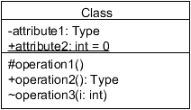

UML 類別圖速用表
Class (類別主體的細節)

對應的程式碼：
Visibility (可視性)
| - | private |
| # | protected |
| + | public |
| ~ | package |
Scope
| features | static |
Relationships (類別之間的關係)
其實這些線條，才是有益於檢視物件導向的重點！
Association (關聯性；結合)
A{ B }
類別 A 用了類別 B；可能做為屬性，也可能是操作時傳遞的訊息。
Dependency (相依性；依存)
A{ B }
類別 A 不只用了類別 B，而且會受其變動所影響。
Generalization (一般化；泛化)
A extends B{}
類別 A 繼承類別 B。
Realization (實現)
A implements B{}
類別 A 實作介面 B。
Aggregation (聚合)
A{ Vector<B> }
或
class A{
private B b;
public A(B b){
this.b = b;
}
}
這是目前 UML 少數交代不清、有待新版本賦予更清晰語意的表示法！現在的主要意思是：類別 A 有一部份是類別 B[1]。
Composition (組合)
A{ Composition<B> }
或
class A{
private B b;
public A(){
this.b = new B();
}
}
比「聚合」有更嚴謹的定義：類別 B 一次只能被一個類別使用，且類別 A 銷毀時類別 B 跟著銷毀。
由於現代新興的物件導向程式語言，都有自動銷毀物件的機制，因此顯得不適用，常常主要意思被改為「類別 A 由類別 B 組成」來用[2]。
Association class (關聯類別)
A{ C<B> }
相當於如下多對多的關係：
因此也有人建議改用這樣的寫法，還比較看得懂：
Multiplicity (多重性)
| 0..1 | 零或一 |
| 1 | 剛好一 |
| 0..* | 零或多 |
| 1..* | 一或多 |